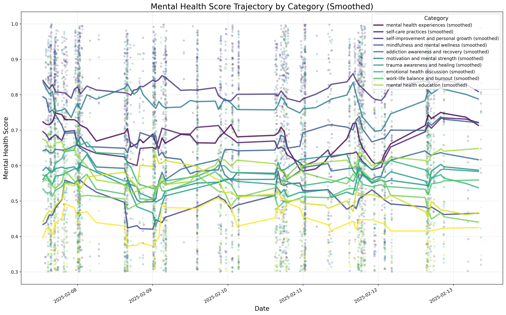
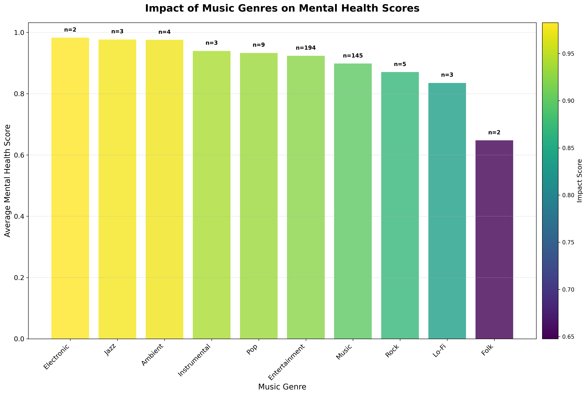
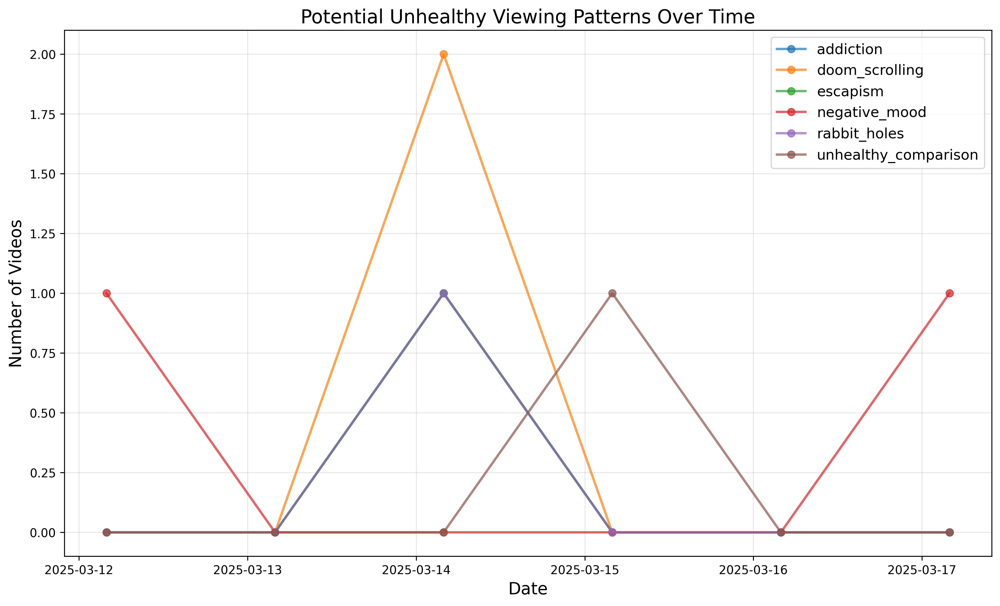
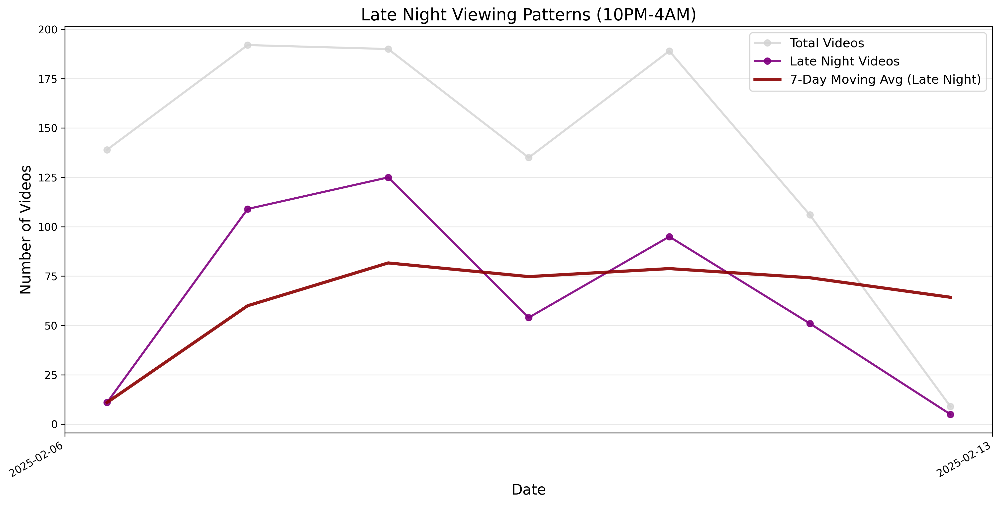
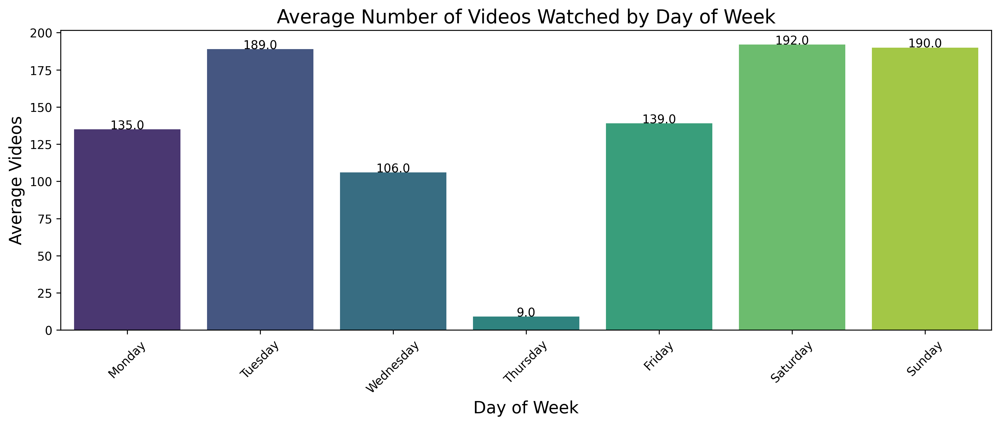
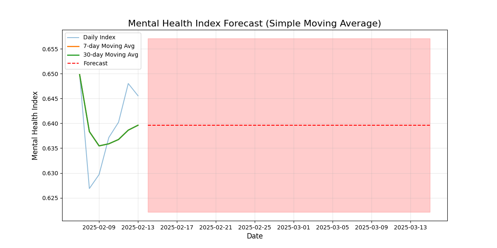

Generated for: User ID - example_user
Report Date: 2025-03-17 04:03
➖ Music: This category shows no strong correlation with mental health indicators. ➖ Education: This category shows no strong correlation with mental health indicators. ➖ Gaming: This category shows no strong correlation with mental health indicators. ➖ News: This category shows no strong correlation with mental health indicators.
➖ 22:00 hour: No strong mental health correlation found for viewing at 22:00. ➖ 08:00 hour: No strong mental health correlation found for viewing at 08:00. ➖ 23:00 hour: No strong mental health correlation found for viewing at 23:00. ➖ 07:00 hour: No strong mental health correlation found for viewing at 07:00.
➖ Music Impact Score: 0.50: Not enough music content to provide meaningful recommendations.
📊 This visualization shows how your mental health sentiment has changed over time across different categories. The smoothed trend lines make it easier to identify patterns and correlations. View the visualization for detailed trends across different mental health categories.
⚠️ This analysis identifies potentially unhealthy viewing trends that may negatively impact your mental health. Pay attention to any significant increases in concerning content.
Detected Concerns:
This report analyzes patterns in your YouTube viewing history that may indicate potentially unhealthy habits. The analysis scans video titles and metadata for keywords associated with various concerns.
Report generated on 2025-03-17 03:54:41
Based on our comprehensive analysis of viewing patterns and mental health correlations: 1. Variety is beneficial: Mix content types rather than binging on a single category 2. Be mindful of viewing times: Your viewing hour can significantly impact mental wellness 3. Track your reactions: Note how you feel after watching different content types 4. Take breaks: Regular breaks during viewing sessions support better mental health 5. Consider music impact: Music videos can have significant effects on your mental state 6. Monitor unhealthy trends: Be aware of any increasing trends in concerning content
This visualization shows how your mental health sentiment has changed over time across different categories.

This visualization shows how different music genres impact your mental health metrics.

This visualization identifies potentially concerning trends in your viewing habits.

This visualization shows your late night viewing patterns and their correlation with mental health impacts.

This visualization shows your viewing patterns across different days of the week.

This visualization shows a forecast of your mental health index based on historical data.
